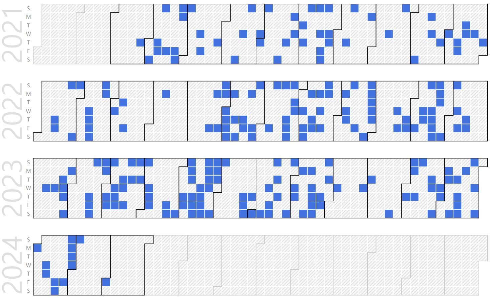

Dongkyu Jung (B.S. Student as a Candidate of M.S. Student)
B.S. Candidate. |
Repository Commit History
|  |
Introduction
Full Bio Sketch
Mr. Jung is currently a B.S. student in School of Electronics Engineering at Kyungpook National University, Daegu, Republic of Korea. His research interests include multiple sensor control and data processing to High-precisionhigh-speedlow-power environment recognition and space recognition in microprocessors with General-Purpose computing on Graphics Processing Units. Currently, he is focusing on effective LiDAR data processing acceleration with microprocessor on-chip GPU.
Research Topic
 Pre-processing of sensor data used by vehicles from edge processors reduces data communication and throughput from vehicle main processors, which positively affects overall power consumption. He studies how to track and remove low-varying data from distance data-based LiDAR sensors compared to previous times, and partially update to reduce total data processing/transmission and propose a method to detect semantic meaningful motions within the image through a two-dimension convolution scheme for the entire data of frames based on time-based variation data. It is expected that such processors can be carried out in real time through acceleration using DCU's on-chip gpu.
Pre-processing of sensor data used by vehicles from edge processors reduces data communication and throughput from vehicle main processors, which positively affects overall power consumption. He studies how to track and remove low-varying data from distance data-based LiDAR sensors compared to previous times, and partially update to reduce total data processing/transmission and propose a method to detect semantic meaningful motions within the image through a two-dimension convolution scheme for the entire data of frames based on time-based variation data. It is expected that such processors can be carried out in real time through acceleration using DCU's on-chip gpu.
Publications
Journal Publications
Conference Publications
Dongkyu Jung and Daejin Park. Real Time Sensor Signal Processing Techniques Using Symmetric Dual-Bank Buffer on FreeRTOS In IEEE LifeTech 2021, 2021.
Dongkyu Jung and Daejin Park. Accelerated On-Chip Algorithm based on Semantic Region-based Partial Difference Detection for LiDAR-Vision Depth Data Transmission Reduction in Lightweight Controller Systems of Autonomous Vehicle In 2021 IEEE 14th International Symposium on Embedded Multicore/Many-core Systems-on-Chip (MCSoC), 2021.
Participation in International Conference
IEEE LifeTech 2021, Osaka, Japan